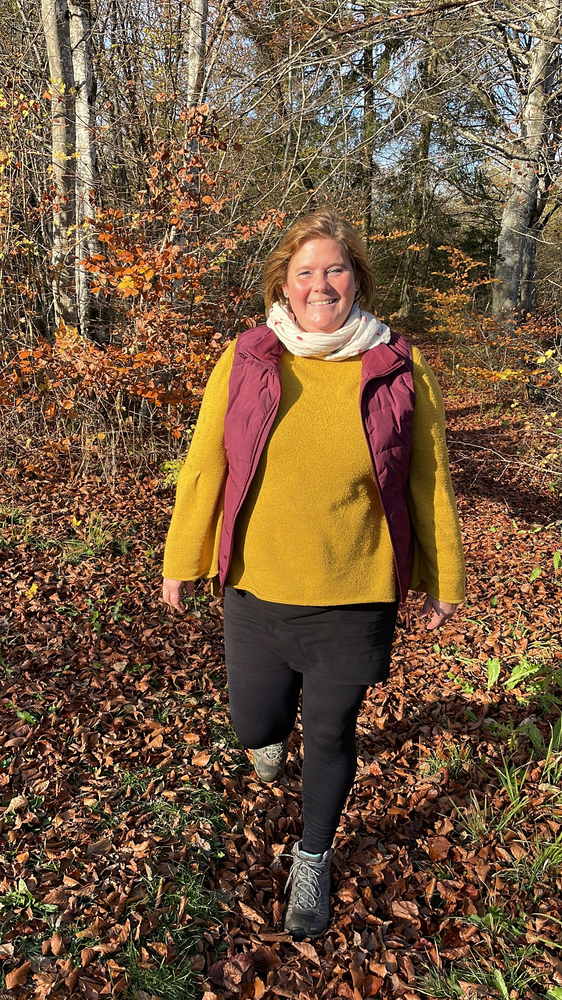
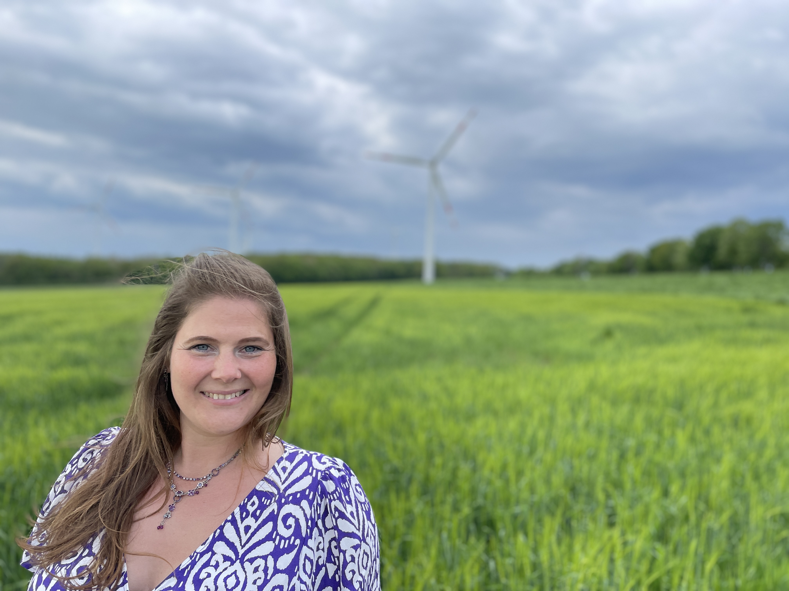

Louisa Breyer – Psychologin B. Sc., Gründerin des Intuitionsraums


Ich bin Louisa, Jahrgang 1986, aufgewachsen in einem Dorf in Rheinhessen, wenige Kilometer von Mainz entfernt, in einem Mehrgenerationenhaushalt mit handwerklichem Familienbetrieb. Schon früh habe ich Verantwortung, Zusammenhalt und Bodenständigkeit erfahren – und zugleich gelernt, wie wichtig die Balance zwischen Fürsorge für andere und Selbstfürsorge ist.
Nach dem Abitur absolvierte ich zunächst eine kaufmännische Ausbildung und begann 2009 das Psychologie-Studium in Trier. Seit über einem Jahrzehnt begleite ich hier Menschen psychosozial – mit und ohne Diagnosen – alle mit dem Wunsch, wieder Kontakt zu sich selbst zu finden.
Die Natur ist für mich ein Kraft- und Reflexionsort – am Wasser, auf stillen Waldwegen oder von erhöhten Orten mit Blick in die Ferne finde ich Ruhe, Klarheit und Verbundenheit.
In meiner Begleitung schaffe ich einen Gegenraum zum oft leistungsgeprägten Alltag: achtsam, wertschätzend und präsent. Mit natürlicher Lebensfreude und kindlicher Neugier helfe ich, schwere Themen leichter anzugehen, neue Perspektiven zu entdecken und eigene Ressourcen bewusst zu spüren. Hier können Menschen ihre Intuition wahrnehmen, Selbstfreundschaft entwickeln und ihren eigenen Weg auf neue Art gestalten.
Meine Arbeit im Intuitionsraum basiert auf einer fundierten psychologischen Ausbildung und langjährigen Weiterbildungen in humanistischen Ansätzen. Diese Vielfalt bildet den Hintergrund meiner Haltung – nicht als starres Konzept, sondern als lebendige Grundlage für eine präsente, achtsame Begleitung.
Seit 2011 besuche ich regelmäßig Kurzfortbildungen mit Selbsterfahrung, die meine Arbeit vertiefen und erweitern. Sie fließen kreativ und situativ in meine Begleitung ein – immer orientiert am Menschen, der mir gegenübersitzt, nicht an einem festen Methodenkatalog.
Ich nehme weiterhin regelmäßig an kollegialem Austausch und fachlicher Supervision teil, damit meine Fachkompetenz fortführend hinterfragt und fachlich eingeordnet wird.
Anmerkung: Ich arbeite nicht als psychologische Psychotherapeutin oder Therapeutin nach der Heilpraktikerprüfung. Meine Weiterbildungen sind bewusst tiefgehend, damit ich aufkommende Themen sensibel erkennen und einordnen kann. Eine therapeutische Bearbeitung in dieser Tiefe gehört nicht zu meinem Angebot. Bei Bedarf verweise ich gerne an Kolleginnen, die auf diesem Gebiet tätig sind.